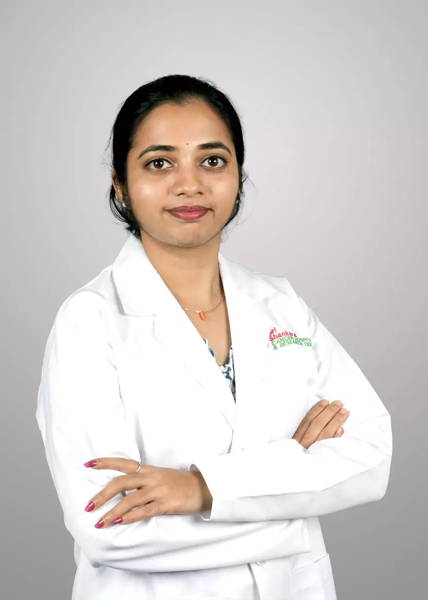

The Nutrition and Dietetics Department provides specialized, evidence-based care focused on supporting patients' strength, fighting side effects, and maintaining health throughout the cancer journey. Our registered Oncology Dietitians devel
The Nutrition and Dietetics Department provides specialized, evidence-based care focused on supporting patients' strength, fighting side effects, and maintaining health throughout the cancer journey. Our registered Oncology Dietitians develop highly personalized nutrition plans to address complex issues like weight loss, malnutrition, taste changes, and difficulty swallowing caused by treatment. Optimal nutrition, which includes maintaining muscle mass and immune function, is a critical component of successful therapy and long-term recovery.
Good nutrition is fundamental to successful cancer treatment. The goal of Oncology Nutrition is to help patients stay strong, maintain a healthy weight, and minimize treatment interruptions. Cancer and its therapies can significantly impact the body's ability to eat and absorb nutrients, making specialized dietary support essential.
Our department is dedicated to providing specialized, evidence-based nutrition care that combats malnutrition, manages treatment side effects, and maintains optimal nutritional status throughout the cancer journey.
We actively work to prevent and manage malnutrition and cachexia (involuntary weight loss and muscle wasting), which can severely weaken the body and negatively affect treatment outcomes.
We create customized dietary strategies and support plans to help patients cope with difficult side effects that interfere with eating, such as nausea, vomiting, appetite loss, taste changes, and difficulty swallowing (dysphagia) caused by chemotherapy or radiation.
By stabilizing weight and improving energy levels, we help patients stay on their prescribed schedule for chemotherapy or radiation, ensuring maximum efficacy of their anti-cancer therapy.
Our services are delivered by Registered Dietitians with specialized training in oncology, focusing on individual patient needs across all stages of care.
Comprehensive assessment of the patient's current weight, body composition, metabolic needs, and specific nutritional deficits. We then create an evidence-based meal plan that meets calorie and protein targets while addressing specific treatment side effects.
Your Personalized Food Plan: You meet one-on-one with an Oncology Dietitian who looks at your bloodwork and symptoms. They create a custom food plan that prioritizes the high calories and protein needed to keep your strength up during treatment.
Guidance on selecting foods and meal timings to mitigate common side effects. For example, recommending bland foods for nausea, high-calorie liquid supplements for severe appetite loss, or soft/pureed diets for patients with Head & Neck or Esophageal Cancer who have dysphagia (swallowing issues).
Fighting Side Effects with Food: If chemo gives you metallic taste, nausea, or diarrhea, we teach you simple, specific food strategies—like eating cool, bland foods or altering spices—to make eating easier and more comfortable.
Management of patients who cannot safely eat enough orally. This includes administering Enteral Nutrition (Tube Feeding), where a liquid diet is delivered directly to the stomach/intestine via a feeding tube (NG or PEG), and Parenteral Nutrition (IV Feeding) for patients with severe bowel obstruction or absorption issues.
Special Feeding Support: If cancer or treatment makes eating impossible, we provide specialized medical nutrition. This might be tube feeding (enteral) or IV feeding (parenteral) to make sure your body gets 100% of the nutrients it needs to fight the cancer.
Education focused on optimizing long-term diet and lifestyle following treatment completion. This guidance is often centered on achieving a healthy weight, increasing plant-based foods, and following WHO/American Cancer Society guidelines for reducing recurrence risk.
Diet for Long-Term Health: Once treatment ends, we help you transition to a diet focused on cancer prevention. This long-term guidance helps you manage your weight and choose foods that support your immune system and overall recovery.
Our dietitians hold advanced training in oncology and base their recommendations on the latest, high-level evidence from groups like the NCCN and ASCO, ensuring advice is scientifically sound and appropriate for a complex medical condition.
We place a critical emphasis on adequate protein intake and specialized strategies to manage the sarcopenia (muscle loss) associated with cachexia, which is vital for improving prognosis and physical function during recovery.
Our dietitians are integrated into the multidisciplinary Tumor Board meetings (especially for GI, Head & Neck, and Esophageal cancers), allowing us to proactively identify patients at high risk of malnutrition before severe weight loss occurs.
We provide quick consultations and rapid initiation of advanced nutrition support (enteral/parenteral) when clinical crises demand immediate nutritional intervention, reducing treatment delays and complication rates.
We understand that a diet must fit the patient's cultural background, preferences, and lifestyle. Our counseling is tailored not just to medical needs but also to making practical, achievable dietary changes that the patient can realistically maintain throughout their challenging treatment period.

MSc - Clinical Nutrition and Dietetics (2022)
Senior Clinical DietitianClinical Nutrition and Dietetics

MSc - Food and Nutrition (2023)
Clinical DietitianClinical Nutrition and Dietetics

MSc - Nutrition and Dietetics (Oct 2023)
Clinical DietitianClinical Nutrition and Dietetics

MSc - Food Science Nutrition and Dietetics (2024)
Clinical DietitianClinical Nutrition and Dietetics

MSc - Food Science Nutrition (2024)
Clinical DietitianClinical Nutrition and Dietetics

MSc - Dietetics and Applied Nutrition (Aug 2023)
Clinical DietitianClinical Nutrition and Dietetics

MSc - Clinical Nutrition & Dietetics (2020)
Incharge - DietitianClinical Nutrition and Dietetics